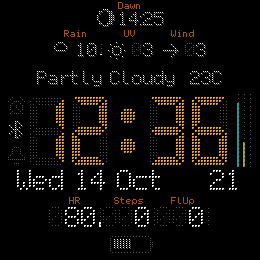
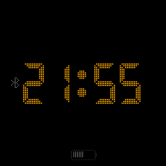
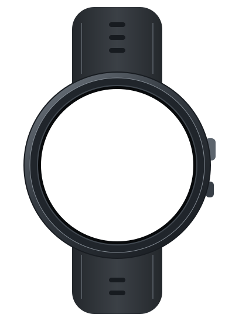

Support
Devices
Languages*
*Translations are generated automatically and may contain errors.
← dawikur.dev · Garmin Connect IQ watch face
phase0 is a clean, customizable watch face built to keep useful information easy to read.



One face, many configurations
Choose the fields, widgets and colors that matter. phase0 adapts the layout to the available space and hides rows that are not in use.
Put the time first, then choose the details that matter to you. Add activity and health metrics, weather, battery information, sunrise and sunset, or status icons. Pick your colors and decide which data appears in the available areas.
phase0 measures the available screen space and adjusts the layout to fit. Depending on the device and selected fields, it can resize text, rearrange the spacing or omit lines that do not fit. Smaller screens can show a simpler face; larger screens can fit more information.
The watch face is designed with efficient updates in mind. Some data depends on your device, Garmin Connect, available sensors and permissions, and may not be available on every watch.
The large segmented clock stays dominant while secondary metrics keep their own lanes.
Accent, foreground and background combinations keep the face readable across bright daytime use and low-distraction AoD viewing.
The layout adapts to each watch screen and the widgets you choose, keeping icons, labels, values and gauges clear at a glance.